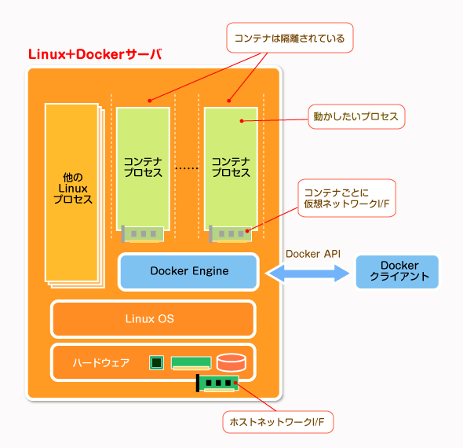
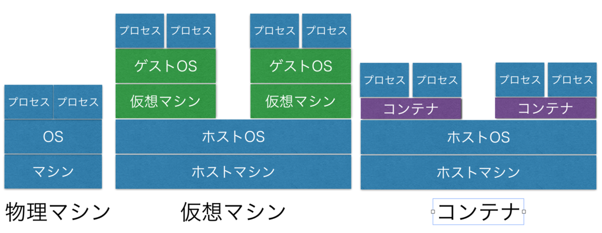

<!doctype html>
<html>
	<head>
		<meta charset="utf-8">
		<meta name="viewport" content="width=device-width, initial-scale=1.0, maximum-scale=1.0, user-scalable=no">

		<title>Docker入門 Lev. B</title>

		<link rel="stylesheet" href="css/reveal.css">
		<link rel="stylesheet" href="css/theme/sky.css">

		<!-- Theme used for syntax highlighting of code -->
		<link rel="stylesheet" href="lib/css/zenburn.css">

		<style type="text/css">
		.reveal h1, .reveal h2, .reveal h3, .reveal h4, .reveal h5, .reveal h6 {
						text-transform: none;
		}

		.reveal pre code {
						max-height: 300px;
		}
		</style>

		<!-- Printing and PDF exports -->
		<script>
			var link = document.createElement( 'link' );
			link.rel = 'stylesheet';
			link.type = 'text/css';
			link.href = window.location.search.match( /print-pdf/gi ) ? 'css/print/pdf.css' : 'css/print/paper.css';
			document.getElementsByTagName( 'head' )[0].appendChild( link );
		</script>
	</head>
	<body>
		<div class="reveal">
			<div class="slides">
				<section data-transition="cube" data-markdown data-separator="^\n---$" data-separator-vertical="^\n>>>$">
					<script type="text/template">


---
## Docker入門

* 社員番号:207
* 所属:企画室
* 名前:富永遼太

---
##### アジェンダ

1. ##### Dockerとは
1. ##### 活用事例の紹介
  1. ##### どんなことに使えるか
  1. ##### 導入事例
  1. ##### 企画室での活用例(デモ)
1. ##### 導入法
  1. ##### 導入の手順
  1. ##### 注意点
  1. ##### 講習会のお知らせ

---
## Dockerとは

>>>
## Dockerとはなにか

* 2008年にdotCloud社（現Docker社）が開発
* 2013年にオープンソースのプロジェクトとして公開
* Linux用のコンテナ管理ソフトウェア

>>>
### なぜ注目されているか

* コンテナを生成する設定を「Dockerイメージ」として公開し、それを他のユーザーと共有できるようにした
<br>
→ソフトウェアの実行環境を簡単に自分のサーバー上で再現して、実行できるようになった

>>>
### コンテナとは

* アプリケーションを依存対象とともにカプセル化したもの
* 軽量な仮想マシン(VM)のようなもの


>>>
### VMとのちがい

* 仮想化の粒度
	* VM:<br>マシン単位での仮想化
	* コンテナ:<br>プロセス単位での仮想化

>>>


>>>


>>>


>>>
### Dockerの利点

* ホストOSとリソースを共有するので効率的
* コンテナの起動や停止は一瞬
* コンテナをイメージ化して配布するのが簡単(Docker Hub)
<!-- (設定ファイルのスナップショット)-->
* とても軽量
	* 数十コンテナを同時に実行することが可能
	<!-- OS側からはコンテナなアプリケーションのように見えている-->

---
### 活用事例の紹介

>>>
### 有名なところ

* ポケモンGO
	* 日本リリースに向けた負荷分散
* クックパッド
	* アプリケーション更新はコンテナ単位で実施
	* 更新に伴うサービス停止を不要にした
* Uber
	* 大量のDBサーバーを一括管理
	<!-- 4000以上のDBサーバを含む1000クラスタ-->

>>>
### 企画室での活用例

* tBCシステムのブロックチェーン基盤はコンテナで実現
* SDK(Node.js)とRailsもコンテナ化
* 次の開発フェーズからはDockerで環境構築する予定

---
### 導入方法

* Macの場合
	* Docker for Macをインストール
* Windowsの場合
	* Docker for Windowsをインストール(Window10のみ)
	* VM上のLinuxOSにDockerをインストール
	* 諦めてMacを買う

>>>
### 注意点

* Dockerイメージをpullする際は、公式リポジトリのものを使う
	* イメージからでは出処のわからないものがあり、安全ではない
* コンテナ内のユーザーをきちんと設定する
	* でないとrootユーザーとして実行されてしまい危険
	* ホストのルートアクセスも手に入れることも可能

					</script>
				</section>
			</div>
		</div>

		<script src="lib/js/head.min.js"></script>
		<script src="js/reveal.js"></script>

		<script>
			// More info about config & dependencies:
			// - https://github.com/hakimel/reveal.js#configuration
			// - https://github.com/hakimel/reveal.js#dependencies
			Reveal.initialize({
				history: true,
				overview: true,
				slideNumber: true,
				transition: 'cube',
				viewDistance: 3,

				dependencies: [
					{ src: 'plugin/markdown/marked.js' },
					{ src: 'plugin/markdown/markdown.js' },
					{ src: 'plugin/notes/notes.js', async: true },
					{ src: 'plugin/highlight/highlight.js', async: true, callback: function() { hljs.initHighlightingOnLoad(); } }
				]
			});
		</script>
	</body>
</html>
